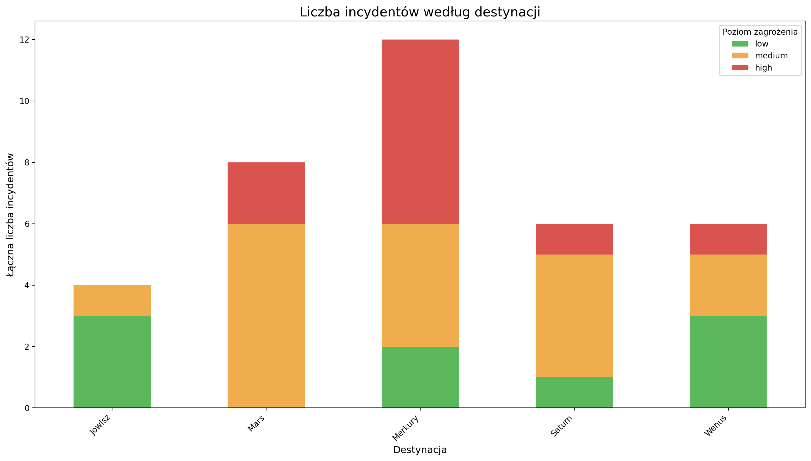
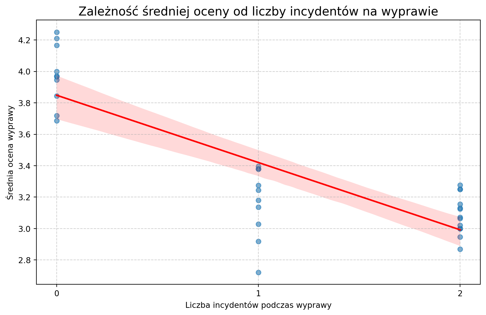
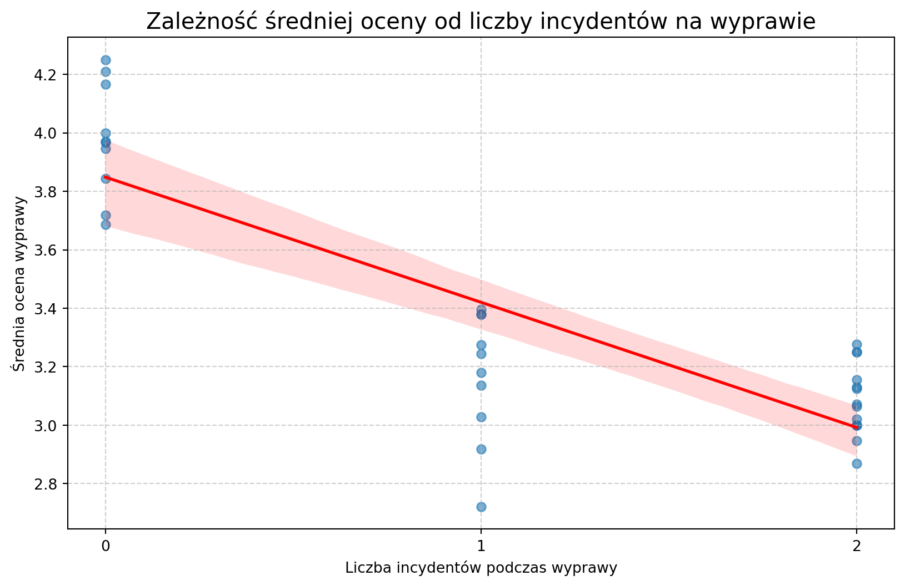
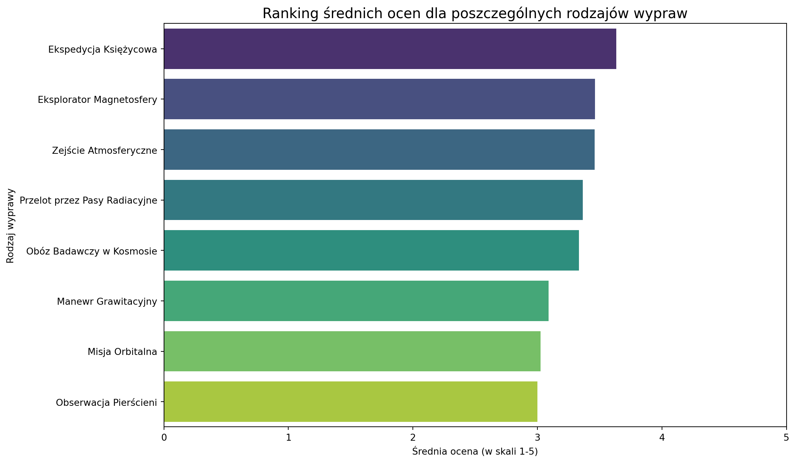

W bezkresie kosmosu, podobnie jak w oceanie danych, kluczem do sukcesu jest precyzyjna nawigacja. Od ponad dekady misją Space-U jest nie tylko otwieranie ludzkości drogi do gwiazd, ale również prowadzenie tej ekspansji w sposób mądry, zrównoważony i rentowny. Rok 2034 był kolejnym kamieniem milowym na naszej orbicie sukcesu – rokiem, w którym umocniliśmy naszą pozycję lidera, wysłaliśmy rekordową liczbę pasażerów ku czerwonym piaskom Marsa i zorzom Jowisza, ale także zmierzyliśmy się z nowymi, nieprzewidzianymi wyzwaniami.
Niniejszy raport jest naszą mapą nawigacyjną po minionym roku. Z kosmiczną precyzją przeanalizowaliśmy zebrane dane, aby odpowiedzieć na fundamentalne pytania. Które trajektorie lotów przynoszą największe zyski? Jak zmienia się profil demograficzny naszych międzyplanetarnych podróżników? Gdzie leżą ukryte ryzyka operacyjne – czy to w pasie asteroid, czy w awaryjności naszych statków? I wreszcie – jak odczucia i oceny naszych klientów korelują z incydentami napotkanymi w drodze na orbitę?
Celem tego dokumentu nie jest jedynie kronikarski zapis przeszłości. To przede wszystkim kompas, który ma wskazać kierunek przyszłych działań. Wnioski tu zawarte stanowią solidny, oparty na twardych danych fundament pod strategiczne decyzje, które wyznaczą kurs Space-U na kolejne lata. Informacje te pozwolą nam nie tylko optymalizować obecne operacje, ale także odkrywać zupełnie nowe konstelacje możliwości rynkowych.
Zapnijcie pasy. Wyruszamy w podróż po danych, która ukształtuje przyszłość międzyplanetarnych podróży.
Z analitycznym pozdrowieniem,
Zespół Analiz Biznesowych Space-U
2 Analiza danych
2.1 Analiza rentowności i popularności wypraw
W tej kluczowej sekcji raportu dokonujemy szczegółowego przeglądu naszego portfolio usług. Naszym celem jest precyzyjne zidentyfikowanie, które rodzaje wypraw stanowią trzon naszej oferty – ciesząc się największym zainteresowaniem klientów – oraz, co najważniejsze, jak popularność ta przekłada się na wyniki finansowe. Zrozumienie rentowności poszczególnych “produktów” jest fundamentem do podejmowania świadomych decyzji o alokacji zasobów, strategii cenowej i przyszłych inwestycjach w rozwój floty oraz nowych tras.
Analiza została przeprowadzona na podstawie pełnych danych operacyjnych i finansowych z czterech lat działalności naszej firmy. Wykorzystaliśmy do tego bezpośrednie zapytanie do naszej centralnej bazy danych, agregując informacje o liczbie lotów, całkowitych kosztach misji oraz skompletowanych transakcjach.
Kod
query ="""SELECT tt.name AS 'Rodzaj wyprawy', COUNT(t.trip_id) AS 'Liczba wypraw', COALESCE(SUM(ac.total_trip_cost), 0) AS 'Całkowite koszty', COALESCE(SUM(ar.total_trip_revenue), 0) AS 'Całkowite przychody', (COALESCE(SUM(ar.total_trip_revenue), 0) - COALESCE(SUM(ac.total_trip_cost), 0)) AS 'Zysk'FROM trip_types ttLEFT JOIN trips t ON tt.trip_type_id = t.trip_type_idLEFT JOIN (SELECT trip_id, SUM(cost_amount) AS total_trip_cost FROM costs GROUP BY trip_id) ac ON t.trip_id = ac.trip_idLEFT JOIN (SELECT trip_id, SUM(amount) AS total_trip_revenue FROM transactions WHERE status = 'Completed' GROUP BY trip_id) ar ON t.trip_id = ar.trip_idGROUP BY tt.nameORDER BY `Liczba wypraw` DESC;"""
Poniższa tabela prezentuje kompleksowe zestawienie kluczowych wskaźników dla każdego typu wyprawy
Nasze dane jednoznacznie wskazują na grupę flagowych produktów, które stanowią o sile naszej marki. Poniżej przedstawiamy TOP 3 najchętniej wybierane wyprawy:
Przelot przez Pasy Radiacyjne: zrealizowano 9 wypraw, które przyniosły 3,604,888,260.81 zł przychodu.
Zejście Atmosferyczne: zrealizowano 9 wypraw, które przyniosły 3,024,915,604.91 zł przychodu.
Ekspedycja Księżycowa: zrealizowano 6 wypraw, które przyniosły 2,884,610,864.91 zł przychodu.
2.1.2 Analiza Rentowności
Doskonałe wieści: W analizowanym okresie wszystkie oferowane przez Space-U rodzaje wypraw okazały się rentowne. To świadczy o zdrowej strukturze kosztów i dobrze skalibrowanej polityce cenowej w całym naszym portfolio.
2.2 Problem drugi
Pytanie: Sporządź wykres liczby obsłużonych klientów w każdym miesiącu działalności firmy, czy firma rośnie, czy podupada?
Kod
query_clients_per_month ="""SELECT DATE_FORMAT(t.departure_datetime, '%Y-%m') AS miesiac, COUNT(tp.client_id) AS liczba_klientowFROM trips tJOIN trip_participants tp ON t.trip_id = tp.trip_idGROUP BY miesiacORDER BY miesiac ASC;"""
import plotly.express as px# Jeśli 'miesiac' to np. "3025-01", możesz zamienić go na string typu "2025-01"df_clients['miesiac_str'] = df_clients['miesiac'].astype(str)df_clients = df_clients.sort_values(by='miesiac_str') # ręczne sortowanie# Poprawki układufig = px.bar(df_clients, x='miesiac_str', y='liczba_klientow', text='liczba_klientow', title='Miesięczna liczba obsłużonych klientów', labels={'miesiac_str': 'Miesiąc', 'liczba_klientow': 'Liczba Klientów'}, color_discrete_sequence=['#4c6ef5'])fig.update_layout(xaxis_tickangle=-45)fig.update_traces(textposition='outside')fig.show()
Kod
x = np.arange(len(df_clients)) y = df_clients['liczba_klientow'] slope, intercept, r_value, p_value, std_err = stats.linregress(x, y)# Ustalamy próg "stagnacji", aby uniknąć klasyfikowania bardzo małych wahań# jako trendu. Np. jeśli wzrost/spadek jest mniejszy niż 0.5 klienta na miesiąc.stagnation_threshold =0.5if slope > stagnation_threshold: wniosek =f"Firma wykazuje wyraźny trend WZROSTOWY." szczegoly =f"Średnio, z każdym miesiącem liczba klientów rośnie o {slope:.2f}."elif slope <-stagnation_threshold: wniosek =f"Firma wykazuje wyraźny trend SPADKOWY." szczegoly =f"Średnio, z każdym miesiącem liczba klientów maleje o {-slope:.2f}."else: wniosek ="Firma wykazuje STAGNACJĘ." szczegoly =f"Brak wyraźnego trendu wzrostowego lub spadkowego (nachylenie linii trendu wynosi {slope:.2f})."print("--- Automatyczna Analiza Trendu ---")print(f"Współczynnik nachylenia linii trendu: {slope:.4f}")print(f"\nWniosek: {wniosek}")print(szczegoly)print("-----------------------------------")
--- Automatyczna Analiza Trendu ---
Współczynnik nachylenia linii trendu: 0.5342
Wniosek: Firma wykazuje wyraźny trend WZROSTOWY.
Średnio, z każdym miesiącem liczba klientów rośnie o 0.53.
-----------------------------------
2.3 Problem trzeci
Pytanie: Które destynacje są najbardziej ryzykowne?
Kod
query_risky_destinations ="""SELECT destinations.name AS kierunek, COUNT(*) AS liczba_wypadkowFROM incidentsLEFT JOIN tripsON incidents.trip_id = trips.trip_idLEFT JOIN destinationsON trips.destination_id = destinations.destination_idGROUP BY kierunekORDER BY liczba_wypadkow DESC;"""
Kod
query_risky_dest2 ="""SELECT d.name AS kierunek, COALESCE(tpd.total_trips, 0) AS liczba_wypraw, COALESCE(ipd.total_incidents, 0) AS liczba_incydentow, (COALESCE(ipd.total_incidents, 0) * 100.0 / tpd.total_trips) AS wskaznik_ryzyka_procentFROM destinations dJOIN -- Pierwsze podzapytanie zdefiniowane bezpośrednio w FROM ( SELECT destination_id, COUNT(trip_id) AS total_trips FROM trips GROUP BY destination_id ) AS tpd ON d.destination_id = tpd.destination_idLEFT JOIN -- Drugie podzapytanie zdefiniowane bezpośrednio w FROM ( SELECT t.destination_id, COUNT(i.incident_id) AS total_incidents FROM incidents i JOIN trips t ON i.trip_id = t.trip_id GROUP BY t.destination_id ) AS ipd ON d.destination_id = ipd.destination_idORDER BY wskaznik_ryzyka_procent DESC;"""
query_incidents_graph ="""SELECT d.name AS kierunek, i.severity, COUNT(i.incident_id) AS liczba_incydentowFROM incidents iJOIN trips t ON i.trip_id = t.trip_idJOIN destinations d ON t.destination_id = d.destination_idWHERE i.severity IN ('high', 'medium', 'low')GROUP BY d.name, i.severity"""
df_incidents_wide = df_incidents_long.pivot_table( index='kierunek', columns='severity', values='liczba_incydentow', fill_value=0)color_map = {'high': '#d9534f', 'medium': '#f0ad4e', 'low': '#5cb85c'}desired_order = ['low', 'medium', 'high']ordered_columns = [col for col in desired_order if col in df_incidents_wide.columns]df_incidents_wide = df_incidents_wide[ordered_columns]
Kod
df_incidents_wide.plot( kind='bar', stacked=True, color=color_map, figsize=(14, 8))plt.title('Liczba incydentów według destynacji', fontsize=16)plt.xlabel('Destynacja', fontsize=12)plt.ylabel('Łączna liczba incydentów', fontsize=12)plt.xticks(rotation=45, ha='right')plt.legend(title='Poziom zagrożenia')plt.tight_layout()plt.show()

Kod
query_weighted_risk ="""WITH trips_per_destination AS ( SELECT destination_id, COUNT(trip_id) AS total_trips FROM trips GROUP BY destination_id),weighted_incidents AS ( SELECT t.destination_id, SUM( CASE WHEN i.severity = 'High' THEN 10 WHEN i.severity = 'Medium' THEN 3 WHEN i.severity = 'Low' THEN 1 ELSE 0 END ) AS risk_score FROM incidents i JOIN trips t ON i.trip_id = t.trip_id GROUP BY t.destination_id)SELECT d.name AS Kierunek, COALESCE(tpd.total_trips, 0) AS Liczba_wypraw, COALESCE(wi.risk_score, 0) AS Suma_punktow_ryzyka, COALESCE(wi.risk_score / tpd.total_trips, 0) AS Wazony_wspolczynnik_ryzykaFROM destinations dLEFT JOIN trips_per_destination tpd ON d.destination_id = tpd.destination_idLEFT JOIN weighted_incidents wi ON d.destination_id = wi.destination_idWHERE tpd.total_trips > 0ORDER BY Wazony_wspolczynnik_ryzyka DESC;"""
Kod
df_risk = pd.read_sql(query_weighted_risk, engine)print("--- Ranking Ryzyka Destynacji (ważony) ---")print(df_risk.to_string())# Automatyczny wniosekprint("\n--- Wnioski ---")most_risky = df_risk.iloc[0]print(f"Najbardziej ryzykowną destynacją według ważonego wskaźnika jest '{most_risky['Kierunek']}' "f"z wynikiem {most_risky['Wazony_wspolczynnik_ryzyka']:.2f} pkt na wyprawę.")
--- Ranking Ryzyka Destynacji (ważony) ---
Kierunek Liczba_wypraw Suma_punktow_ryzyka Wazony_wspolczynnik_ryzyka
0 Merkury 14 74.0 5.2857
1 Mars 11 38.0 3.4545
2 Wenus 7 19.0 2.7143
3 Saturn 11 23.0 2.0909
4 Jowisz 7 6.0 0.8571
--- Wnioski ---
Najbardziej ryzykowną destynacją według ważonego wskaźnika jest 'Merkury' z wynikiem 5.29 pkt na wyprawę.
Wadliwość statków
Kod
query_spacecraft_incidents ="""SELECT spacecraft.name AS nazwa_statku, COUNT(*) AS liczba_usterekFROM incidentsLEFT JOIN tripsON incidents.trip_id = trips.trip_idLEFT JOIN spacecraftON trips.spacecraft_id = spacecraft.spacecraft_idWHERE incidents.category = 'equipment'GROUP BY spacecraft.nameORDER BY liczba_usterek desc"""
query_failure_rate ="""WITH trips_per_spacecraft AS ( SELECT spacecraft_id, COUNT(trip_id) AS total_trips FROM trips GROUP BY spacecraft_id),equipment_failures AS ( SELECT t.spacecraft_id, COUNT(i.incident_id) AS total_failures FROM incidents i JOIN trips t ON i.trip_id = t.trip_id WHERE i.category = 'equipment' GROUP BY t.spacecraft_id)SELECT s.name AS nazwa_statku, COALESCE(tps.total_trips, 0) AS liczba_wypraw, COALESCE(ef.total_failures, 0) AS liczba_usterek, CASE WHEN tps.total_trips > 0 THEN COALESCE(ef.total_failures, 0) / CAST(tps.total_trips AS FLOAT) ELSE 0 END AS usterki_na_wypraweFROM spacecraft sLEFT JOIN trips_per_spacecraft tps ON s.spacecraft_id = tps.spacecraft_idLEFT JOIN equipment_failures ef ON s.spacecraft_id = ef.spacecraft_idORDER BY usterki_na_wyprawe DESC;"""
print("--- Ranking Niezawodności Statków (Usterki na Wyprawę) ---")print(df_failure_rate.to_string())plt.figure(figsize=(12, 6))sns.barplot(data=df_failure_rate, x='usterki_na_wyprawe', y='nazwa_statku', hue="nazwa_statku", palette='Reds_r')plt.title('Wskaźnik Usterek Sprzętowych na Wyprawę')plt.xlabel('Średnia liczba usterek na jedną wyprawę')plt.ylabel('Statek kosmiczny')plt.tight_layout()plt.show()
# --- Automatyczne Wnioski z Rankingu Niezawodności ---print("\n--- 🤖 Automatyczne Wnioski z Rankingu Niezawodności ---")most_failure_prone = df_failure_rate.iloc[0]active_ships = df_failure_rate[df_failure_rate['liczba_wypraw'] >0]ifnot active_ships.empty: most_reliable = active_ships.iloc[-1]print("\n\n🔧 Najbardziej podatny na usterki jest statek:")print(f" -> Nazwa: '{most_failure_prone['nazwa_statku']}'")print(f" -> Wskaźnik: {most_failure_prone['usterki_na_wyprawe']:.3f} usterek na każdą wyprawę.")print(f" (Na podstawie {int(most_failure_prone['liczba_usterek'])} usterek w ciągu {int(most_failure_prone['liczba_wypraw'])} wypraw).")print("\n🏆 Najbardziej niezawodnym statkiem jest:")print(f" -> Nazwa: '{most_reliable['nazwa_statku']}'")print(f" -> Wskaźnik: {most_reliable['usterki_na_wyprawe']:.3f} usterek na każdą wyprawę.")if most_reliable['usterki_na_wyprawe'] ==0:print(f" (Statek odbył {int(most_reliable['liczba_wypraw'])} wypraw bez odnotowanej usterki sprzętowej - doskonały wynik!)")else:print(f" (Na podstawie {int(most_reliable['liczba_usterek'])} usterek w ciągu {int(most_reliable['liczba_wypraw'])} wypraw).")
--- 🤖 Automatyczne Wnioski z Rankingu Niezawodności ---
🔧 Najbardziej podatny na usterki jest statek:
-> Nazwa: 'Eclipse-Edge'
-> Wskaźnik: 0.500 usterek na każdą wyprawę.
(Na podstawie 2 usterek w ciągu 4 wypraw).
🏆 Najbardziej niezawodnym statkiem jest:
-> Nazwa: 'Nova-NX'
-> Wskaźnik: 0.000 usterek na każdą wyprawę.
(Statek odbył 1 wypraw bez odnotowanej usterki sprzętowej - doskonały wynik!)
2.4 Problem czwarty
Pytanie: Czy występowanie incydentów ma wpływ na ocenę wyprawy?
Kod
query_feedback_incidents ="""SELECT AVG(feedback.rating) AS srednia_ocena, t.liczba_wypadkowFROM feedbackLEFT JOIN tripsON feedback.trip_id = trips.trip_idLEFT JOIN (SELECT incidents.trip_id, COUNT(incidents.incident_id) AS liczba_wypadkow FROM incidents GROUP BY trip_id) tON t.trip_id = trips.trip_idGROUP BY feedback.trip_id"""
Kod
query_correlation ="""WITH avg_ratings AS ( SELECT trip_id, AVG(rating) AS avg_rating FROM feedback GROUP BY trip_id),incident_counts AS ( SELECT trip_id, COUNT(incident_id) AS incident_count FROM incidents GROUP BY trip_id)SELECT t.trip_id, ar.avg_rating AS srednia_ocena, COALESCE(ic.incident_count, 0) AS liczba_incydentowFROM trips tJOIN avg_ratings ar ON t.trip_id = ar.trip_idLEFT JOIN incident_counts ic ON t.trip_id = ic.trip_id;"""
correlation_coeff = df_correlation['srednia_ocena'].corr(df_correlation['liczba_incydentow'])print(f"--- 🤖 Analiza korelacji: Ocena vs. Incydenty ---")print(f"Obliczony współczynnik korelacji: {correlation_coeff:.3f}")if correlation_coeff <-0.3:print("Wniosek: Istnieje zauważalna korelacja ujemna. Wzrost liczby incydentów wiąże się ze spadkiem ocen.")elif correlation_coeff >0.3:print("Wniosek: Istnieje zauważalna korelacja dodatnia (wynik nieoczekiwany).")else:print("Wniosek: Brak silnej korelacji. Liczba incydentów nie wydaje się mieć dużego wpływu na ocenę.")print("-------------------------------------------------")plt.figure(figsize=(10, 6))sns.regplot(data=df_correlation, x='liczba_incydentow', y='srednia_ocena', line_kws={"color": "red", "lw": 2}, scatter_kws={"alpha": 0.6})plt.title('Zależność średniej oceny od liczby incydentów na wyprawie', fontsize=15)plt.xlabel('Liczba incydentów podczas wyprawy')plt.ylabel('Średnia ocena wyprawy')max_incidents =int(df_correlation['liczba_incydentow'].max())plt.xticks(range(max_incidents +1))plt.grid(True, linestyle='--', alpha=0.6)plt.show()
--- 🤖 Analiza korelacji: Ocena vs. Incydenty ---
Obliczony współczynnik korelacji: -0.834
Wniosek: Istnieje zauważalna korelacja ujemna. Wzrost liczby incydentów wiąże się ze spadkiem ocen.
-------------------------------------------------

2.5 Problem piąty
Pytanie: Jakie destynacje i rodzaje wycieczek otrzymują najlepsze oceny?
Kod
query_dest_ratings ="""SELECT d.name AS kierunek, AVG(f.rating) AS srednia_ocena, COUNT(f.rating) AS liczba_ocenFROM feedback fJOIN trips t ON f.trip_id = t.trip_idJOIN destinations d ON t.destination_id = d.destination_idWHERE f.rating IS NOT NULLGROUP BY d.nameHAVING COUNT(f.rating) > 2ORDER BY srednia_ocena DESC;"""
print("\n--- ⭐ Ranking Ocen Destynacji ---")best_dest = df_dest_ratings.iloc[0]worst_dest = df_dest_ratings.iloc[-1]print(f"\n🥇 Najwyżej oceniana destynacja: '{best_dest['kierunek']}'")print(f" -> Średnia ocena: {best_dest['srednia_ocena']:.2f} na podstawie {int(best_dest['liczba_ocen'])} opinii.")print(f"\n📉 Najniżej oceniana destynacja: '{worst_dest['kierunek']}'")print(f" -> Średnia ocena: {worst_dest['srednia_ocena']:.2f} na podstawie {int(worst_dest['liczba_ocen'])} opinii.")
--- ⭐ Ranking Ocen Destynacji ---
🥇 Najwyżej oceniana destynacja: 'Mars'
-> Średnia ocena: 3.52 na podstawie 196 opinii.
📉 Najniżej oceniana destynacja: 'Saturn'
-> Średnia ocena: 3.29 na podstawie 311 opinii.
Kod
plt.figure(figsize=(12, 7))sns.barplot(data=df_dest_ratings, x='srednia_ocena', y='kierunek', palette='coolwarm')plt.title('Ranking średnich ocen dla poszczególnych destynacji', fontsize=15)plt.xlabel('Średnia ocena (w skali 1-5)')plt.ylabel('Destynacja')plt.xlim(0, 5)plt.tight_layout()plt.show()
C:\Users\rafal\AppData\Local\Temp\ipykernel_30576\1199124194.py:2: FutureWarning:
Passing `palette` without assigning `hue` is deprecated and will be removed in v0.14.0. Assign the `y` variable to `hue` and set `legend=False` for the same effect.

Kod
query_type_ratings ="""SELECT tt.name AS typ_wyprawy, AVG(f.rating) AS srednia_ocena, COUNT(f.rating) AS liczba_ocenFROM feedback fJOIN trips t ON f.trip_id = t.trip_idJOIN trip_types tt ON t.trip_type_id = tt.trip_type_idWHERE f.rating IS NOT NULLGROUP BY tt.nameHAVING COUNT(f.rating) > 2ORDER BY srednia_ocena DESC;"""
print("\n--- ⭐ Ranking Ocen Rodzajów Wypraw ---")best_type = df_type_ratings.iloc[0]worst_type = df_type_ratings.iloc[-1]print(f"\n🥇 Najwyżej oceniany typ wyprawy: '{best_type['typ_wyprawy']}'")print(f" -> Średnia ocena: {best_type['srednia_ocena']:.2f} na podstawie {int(best_type['liczba_ocen'])} opinii.")print(f"\n📉 Najniżej oceniany typ wyprawy: '{worst_type['typ_wyprawy']}'")print(f" -> Średnia ocena: {worst_type['srednia_ocena']:.2f} na podstawie {int(worst_type['liczba_ocen'])} opinii.")
--- ⭐ Ranking Ocen Rodzajów Wypraw ---
🥇 Najwyżej oceniany typ wyprawy: 'Ekspedycja Księżycowa'
-> Średnia ocena: 3.63 na podstawie 158 opinii.
📉 Najniżej oceniany typ wyprawy: 'Obserwacja Pierścieni'
-> Średnia ocena: 3.00 na podstawie 40 opinii.
Kod
plt.figure(figsize=(12, 7))sns.barplot(data=df_type_ratings, x='srednia_ocena', y='typ_wyprawy', palette='viridis')plt.title('Ranking średnich ocen dla poszczególnych rodzajów wypraw', fontsize=15)plt.xlabel('Średnia ocena (w skali 1-5)')plt.ylabel('Rodzaj wyprawy')plt.xlim(0, 5)plt.tight_layout()plt.show()
C:\Users\rafal\AppData\Local\Temp\ipykernel_30576\344212182.py:2: FutureWarning:
Passing `palette` without assigning `hue` is deprecated and will be removed in v0.14.0. Assign the `y` variable to `hue` and set `legend=False` for the same effect.

2.6 Problem szósty
Pytanie: Jaka jest struktura wieku naszych klientów?
Kod
query_dob ="""SELECT date_of_birthFROM clientsWHERE date_of_birth IS NOT NULL;"""
query_rfm =f"""WITH Monetary AS ( SELECT client_id, SUM(amount) AS monetary_value FROM transactions WHERE status = 'Completed' AND transaction_date <= '{analysis_date}' GROUP BY client_id),RecencyFrequency AS ( SELECT p.client_id, MAX(t.departure_datetime) AS last_trip_date, COUNT(DISTINCT p.trip_id) AS frequency FROM trip_participants p JOIN trips t ON p.trip_id = t.trip_id WHERE t.departure_datetime <= '{analysis_date}' GROUP BY p.client_id)SELECT c.client_id, c.first_name, c.last_name, DATEDIFF('{analysis_date}', rf.last_trip_date) AS recency_days, COALESCE(rf.frequency, 0) AS frequency, COALESCE(m.monetary_value, 0) AS monetaryFROM clients cLEFT JOIN RecencyFrequency rf ON c.client_id = rf.client_idLEFT JOIN Monetary m ON c.client_id = m.client_id;"""
C:\Users\rafal\AppData\Local\Temp\ipykernel_30576\1405736794.py:2: FutureWarning:
A value is trying to be set on a copy of a DataFrame or Series through chained assignment using an inplace method.
The behavior will change in pandas 3.0. This inplace method will never work because the intermediate object on which we are setting values always behaves as a copy.
For example, when doing 'df[col].method(value, inplace=True)', try using 'df.method({col: value}, inplace=True)' or df[col] = df[col].method(value) instead, to perform the operation inplace on the original object.
print(f"--- 📊 Analiza RFM (stan na dzień: {analysis_date}) ---")print("\nPrzykładowe dane po segmentacji:")print(df_rfm[['first_name', 'last_name', 'recency_days', 'frequency', 'monetary', 'R_score', 'F_score', 'M_score', 'Segment']].head().to_string())print("\n"+"="*50+"\n")plt.figure(figsize=(12, 8))segment_counts = df_rfm['Segment'].value_counts()sns.barplot(x=segment_counts.index, y=segment_counts.values, palette='viridis')plt.title('Rozkład Klientów w Segmentach RFM', fontsize=16)plt.xlabel('Segment', fontsize=12)plt.ylabel('Liczba Klientów', fontsize=12)plt.xticks(rotation=45, ha='right')plt.tight_layout()plt.show()
C:\Users\rafal\AppData\Local\Temp\ipykernel_30576\1599623877.py:8: FutureWarning:
Passing `palette` without assigning `hue` is deprecated and will be removed in v0.14.0. Assign the `x` variable to `hue` and set `legend=False` for the same effect.
print("\n\n"+"="*60)print("--- Zautomatyzowane Podsumowanie Analizy Segmentacji RFM ---")print("="*60)print("\n## Podsumowanie ilościowe segmentów:\n")segment_counts = df_rfm['Segment'].value_counts()total_clients =len(df_rfm)for segment, count in segment_counts.items(): percentage = (count / total_clients) *100print(f"- {segment}: \t{count} klientów ({percentage:.1f}% wszystkich)")print("\n\n## Rekomendacje Biznesowe dla Firmy:\n")recommendations = {'Mistrzowie (Champions)': "To Twoi najcenniejsi klienci. Angażuj ich, proś o opinie i recenzje, ""zaoferuj programy lojalnościowe i dostęp do ekskluzywnych ofert. ""Są ambasadorami Twojej marki.",'Lojalni Klienci': "Są kręgosłupem Twojej firmy. Podtrzymuj ich zaangażowanie, oferując ""nowe produkty (cross-selling), lepsze wersje wypraw (up-selling) ""i budując z nimi długotrwałą relację.",'Ryzykowni (At Risk)': "KLUCZOWA GRUPA DO REAKTYWACJI! To byli dobrzy klienci, którzy dawno ""nic nie kupili. Skontaktuj się z nimi osobiście, zaoferuj spersonalizowaną ""zniżkę 'na powrót' i dowiedz się, dlaczego przestali podróżować.",'Wieloryby (Big Spenders)':"Wydają dużo, ale niekoniecznie często. Upewnij się, że są zadowoleni ""z jakości usług. Mogą być podatni na oferty konkurencji. Warto zadbać ""o ich satysfakcję.",'Nowi Klienci':"Pierwsze wrażenie jest kluczowe. Zapewnij im doskonałe doświadczenie ""na pokładzie i stwórz spersonalizowaną ścieżkę komunikacji (np. seria maili), ""aby zachęcić ich do drugiej podróży i zamienić w lojalnych klientów.",'Hibernujący':"Duża grupa nieaktywnych klientów. Jeśli ich liczba jest znacząca, rozważ ""szeroko zakrojoną, ale niskokosztową kampanię 'Tęsknimy za Tobą!' z atrakcyjną ""ofertą. Nie inwestuj w nich tyle, co w segment 'Ryzykowni'."}for segment in segment_counts.index:if segment in recommendations:print(f"💡 Segment: {segment}")print(f" Rekomendacja: {recommendations[segment]}\n")print("="*60)
============================================================
--- Zautomatyzowane Podsumowanie Analizy Segmentacji RFM ---
============================================================
## Podsumowanie ilościowe segmentów:
- Pozostali: 300 klientów (50.0% wszystkich)
- Mistrzowie (Champions): 150 klientów (25.0% wszystkich)
- Lojalni Klienci: 150 klientów (25.0% wszystkich)
## Rekomendacje Biznesowe dla Firmy:
💡 Segment: Mistrzowie (Champions)
Rekomendacja: To Twoi najcenniejsi klienci. Angażuj ich, proś o opinie i recenzje, zaoferuj programy lojalnościowe i dostęp do ekskluzywnych ofert. Są ambasadorami Twojej marki.
💡 Segment: Lojalni Klienci
Rekomendacja: Są kręgosłupem Twojej firmy. Podtrzymuj ich zaangażowanie, oferując nowe produkty (cross-selling), lepsze wersje wypraw (up-selling) i budując z nimi długotrwałą relację.
============================================================